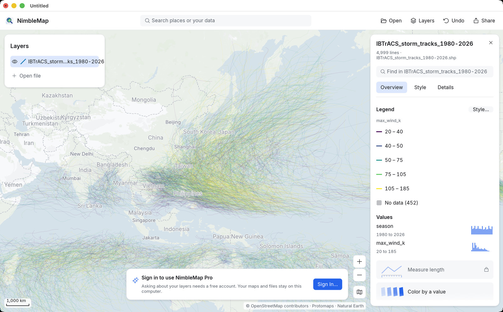
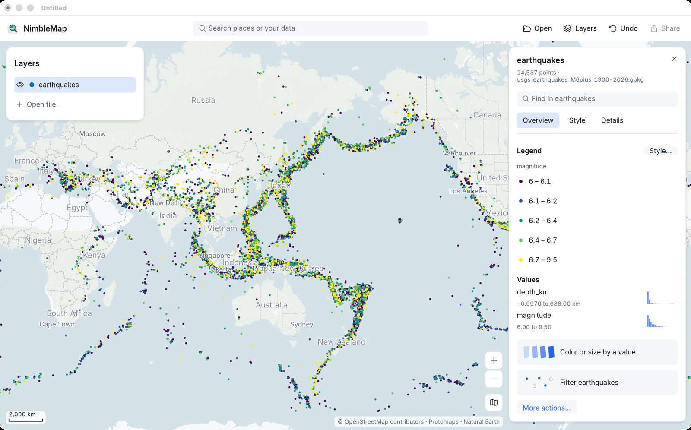
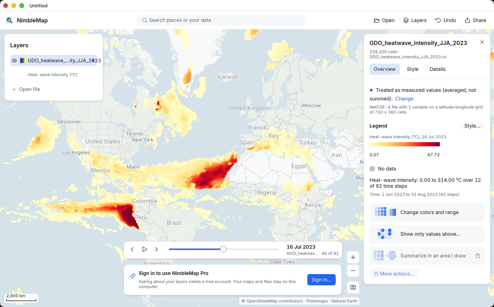
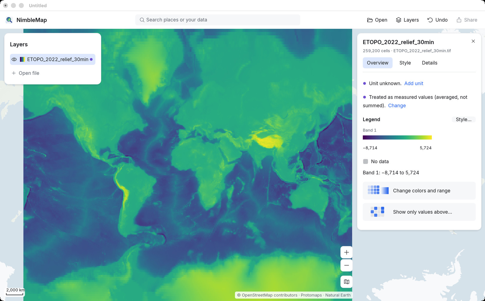
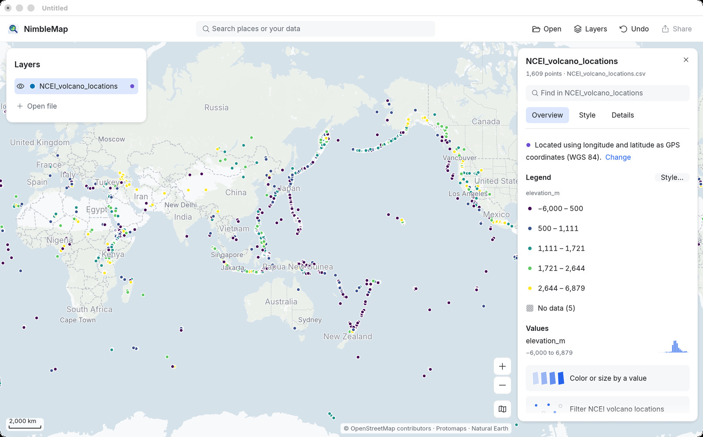
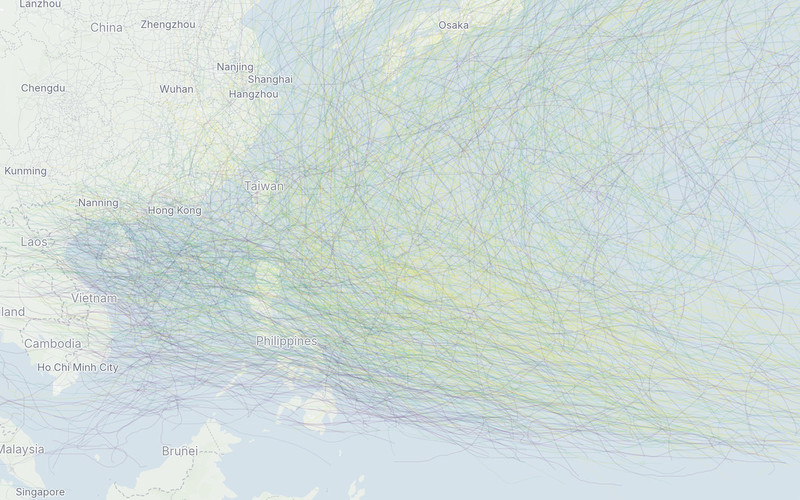
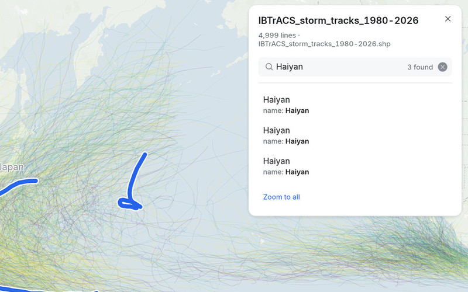
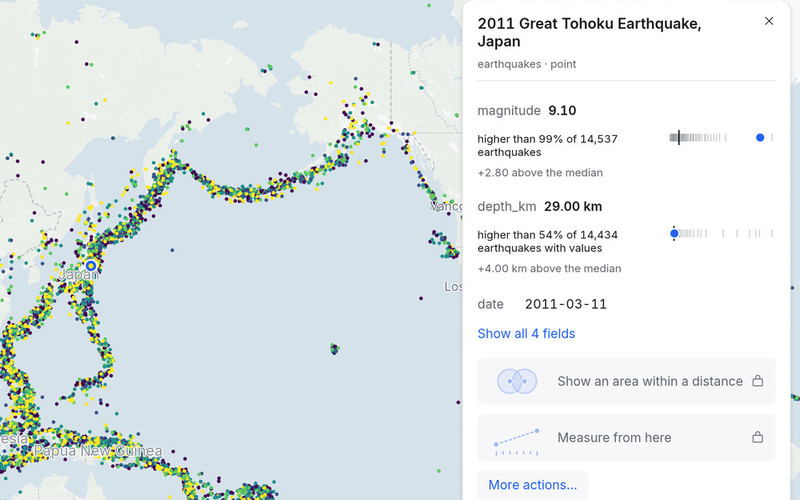
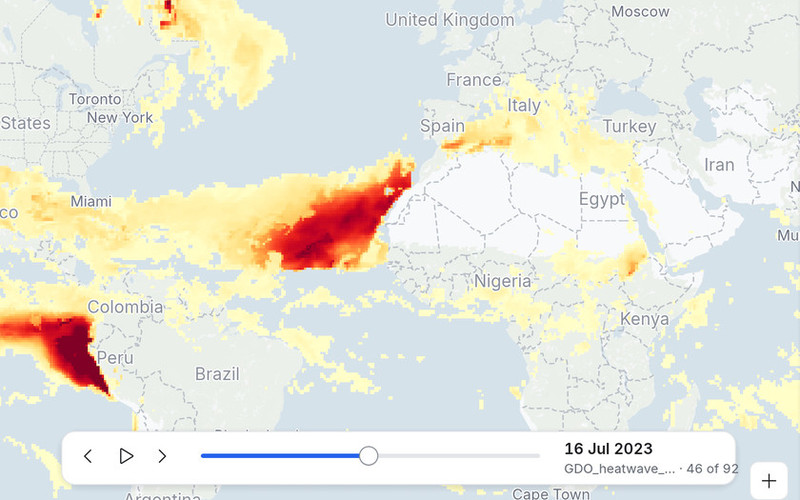

Terremotos ao vivo
USGS Earthquake Hazards Program
Grátis para Mac
Shapefiles, GeoPackages, NetCDF, GeoTIFFs, GPX, KML, CSVs com coordenadas: os arquivos que você baixa da NASA, do USGS ou do portal de dados abertos da sua cidade. O NimbleMap abre todos como mapa em segundos. Sem curso de SIG, sem configurar nada.
Arraste o arquivo para o NimbleMap ou clique duas vezes em um Shapefile, GeoPackage ou arquivo NetCDF para abri-lo na hora.
O NimbleMap precisa de um Mac com Apple silicon. Uma versão para Windows está a caminho.
Grátis · cerca de 74 MB · macOS 13 ou posterior · Apple silicon · funciona offline
Na primeira vez, o macOS pede sua permissão — veja como abrir





dados de mapa
IBTrACS_storm_tracks_1980-2026.shp: 4.999 trajetórias de tempestades, coloridas pelo vento máximo
O que ele abre
Arraste um arquivo para o NimbleMap e ele cai no lugar certo, na projeção certa, pronto para explorar.
.shp
Limites, estradas, trajetórias de tempestades. Mantenha os arquivos .dbf, .shx e .prj ao lado dele.
.zip
Abra como está, sem descompactar.
.gpkg
Um único arquivo organizado que pode guardar muitas camadas.
.geojson.json
O formato de mapa da web, de portais de dados abertos e APIs.
.csv.tsv.xlsx
CSV, TSV ou Excel com colunas de latitude e longitude.
.kml.kmz
Marcadores, caminhos e áreas do Google Earth.
.gpx
Corridas, pedaladas e trilhas do seu relógio ou celular.
.tif.tiff
Elevação, cobertura do solo, imagens de satélite e de drone.
.nc
Grades de clima e de tempo, reproduzidas com um controle de tempo.
O clique duplo abre Shapefiles, GeoPackages e arquivos NetCDF no NimbleMap. Outros arquivos abrem em outros apps com o clique duplo, então arraste-os para o NimbleMap ou use clique com o botão direito › Abrir com › NimbleMap.
Dados gratuitos
Conjuntos de dados públicos escolhidos a dedo, de terremotos em tempo real a estradas romanas. A maioria baixa com um clique.
Depois de aberto

Role, faça pinça e arraste, do planeta inteiro até um único litoral.

Digite uma cidade para voar até ela, ou um nome para encontrá-lo no seu arquivo: aqui, todas as tempestades chamadas Haiyan.

Veja o que é e como se compara. O terremoto de Tohoku de 2011 foi mais forte que 99% de 14.537.

Arquivos com passos de tempo ganham um controle de tempo. Clique em Play (Reproduzir) e veja um verão de ondas de calor se mover.
Cada número vem de todos os seus dados, não só do que está na tela, e cada passo pode ser desfeito.
NimbleMap Pro: faça perguntas aos seus dados em palavras simples. Grátis com uma conta — chega na próxima versão.
O que o Pro acrescenta →Prática
Não precisa baixar nada: eles vêm com o app.

4.999 trajetórias de tempestades desde 1980. Os ventos de 170 nós do Haiyan superam 99% de 4.547 tempestades.
Experimente passo a passo → IBTrACS v04r01
1.789 muralhas de cidades. A de Pequim cercava 35,3 km², mais que 99% delas.
Experimente passo a passo → Xue et al. 2021 · CC BY 4.0
Clique em Play (Reproduzir) e veja o calor se deslocar pelo mundo durante o verão do hemisfério norte.
Experimente passo a passo → Copernicus GDO / JRC · CC BY 4.0Também incluídos: terremotos desde 1900, vulcões, aeroportos, usinas de energia, e cidades, países e elevação do mundo.
Compartilhar
Acrescente título, legenda e créditos. Exporte para um slide, um relatório ou uma postagem.

O NimbleMap precisa de um Mac com Apple silicon. Uma versão para Windows está a caminho.
Grátis · cerca de 74 MB · macOS 13 ou posterior · Apple silicon · funciona offline
Na primeira vez, o macOS pede sua permissão — veja como abrir
O NimbleMap é feito com o RustGIS.